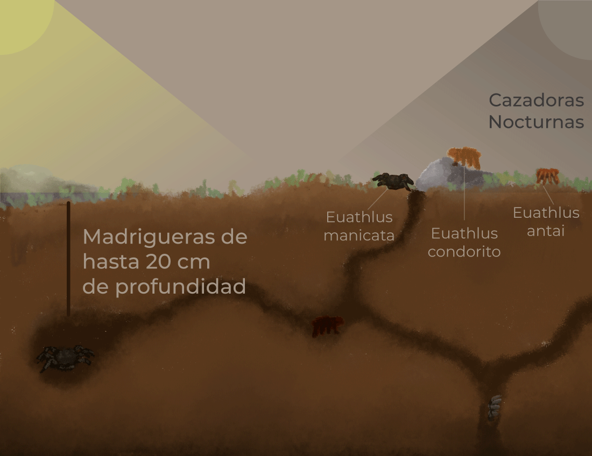

HÁBITAT

La araña pollito habita en madrigueras de baja profundidad, las cuales fabrica bajo tierra o establece debajo de accidentes naturales en el terreno, rocas y troncos. Se distribuye en variados terrenos, desde planicies con matorrales y vegetación pequeña hasta zonas boscosas densas.